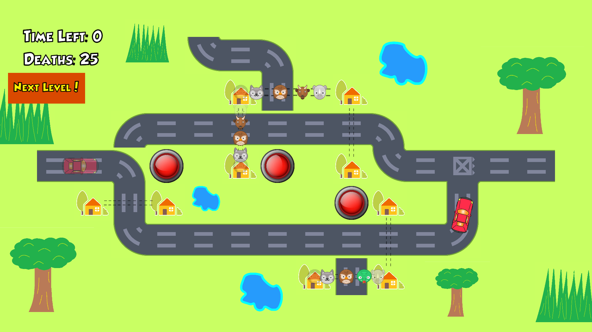

Animals Crossing is a small action puzzle game that incorporates basic pathfinding with quick reflexes. It was made during Gamecraft! 2019, an annual 24-hour game-jam competition hosted by the National University of Singapore (NUS) Students’ Games Development Group.
Designer, mainly responsible for features such as:
December 6, 2019 - December 7, 2019
Koh Lewis
Stanley Tay
Alex Ang
Kyle Chu
Unity
Github
Paint
Originally inspired by the trolley problem, Animals Crossing puts the player in the position of a traffic co-ordinator. There are no traffic lights in this town and drivers are very aggressive,so the animals of this town has a hard time crossing the road. You as the player has the ability to change the direction which cars travel by clicking on the red buttons on the screen. However, cars are impatient and the animals don't look both ways before crossing the street! Can you help keep the population of this town stable?
The roads in Animals Crossing are important to the flow of the game. Since this is the only way for players to interact with the game, it is important that the roads feel interesting to control. Since there are only three levels in the game, we tried to make each one feel unique. The first level, as the tutorial, eases players into the game, only giving them one decision to make. However, laters levels become increasingly complex. Level two has multiple branching paths, so the decisions from the first split affects which path the player needs to pay attention to in the later parts of the level. The third level has a loop, so if the player brings a car into that section, they will need to remember to account for them coming back in the future. By creating different challenges every time, we keep the player invested in trying out new stages, as the strategies and focuses change with each level.
Animals Crossing is a puzzle game. The player is tasked with finding a route for cars to go so that they avoid the animals. However, due to the fast nature of the game, it can be pretty hectic for players to figure out what to do. As such, we need to make sure that players feel comfortable thoughout the play session. One way we do this is by being clear with our intention of the player. At any time, glancing at a snapshot of the game, the player is shown an open path which the car can travel without causing any accidents. When a player is overwhelmed, they can take a few moments to catch their breath and they will see a clear target route they need to direct traffic towards. This gives the player a focus for their next actions in the game.
The game also keeps track of the deaths cause in a stage. This number starts at 0 and increments every time there is an accident. It acts as a sort of a scoring system, where the point allocation is very obvious. This gives players a focus for improvement - keeping everyone alive. As players get better at preventing accidents, the death counter will increase slower and slower. When a player has mastered a stage, the death counter would not increase anymore. This gives a visual sense of progression for the player.
The player has room to continuously improve, as the game does not force the player out of the gameplay loop. There is no target deaths which lead to a game over, and once a certain amount of time has passed, the player isn't immediately dropped into the next level. Instead, after the set time, a button which takes the player to the next level appears. This gives the player room to move at their own pace. If they are satisfied with their current mastery, they go to the next stage. Alternatively, they can stay on the current stage and practise until they feel ready to move on.